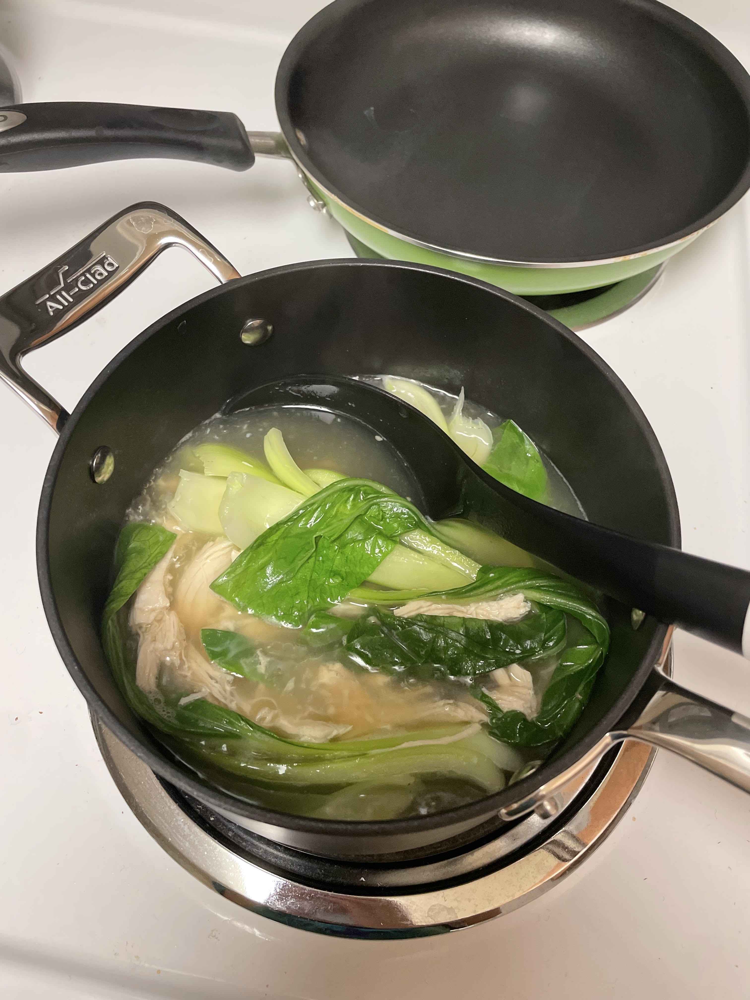

Chicken Soup
I recently bought a rotisserie chicken from Costco and made soup with the bones. I added the shredded chicken, bok choy, and rice.
This was a relatively easy meal to make. It was a bit challenging to get the flavor of the soup right, but it turned out great!
Stay tuned for more meals!
